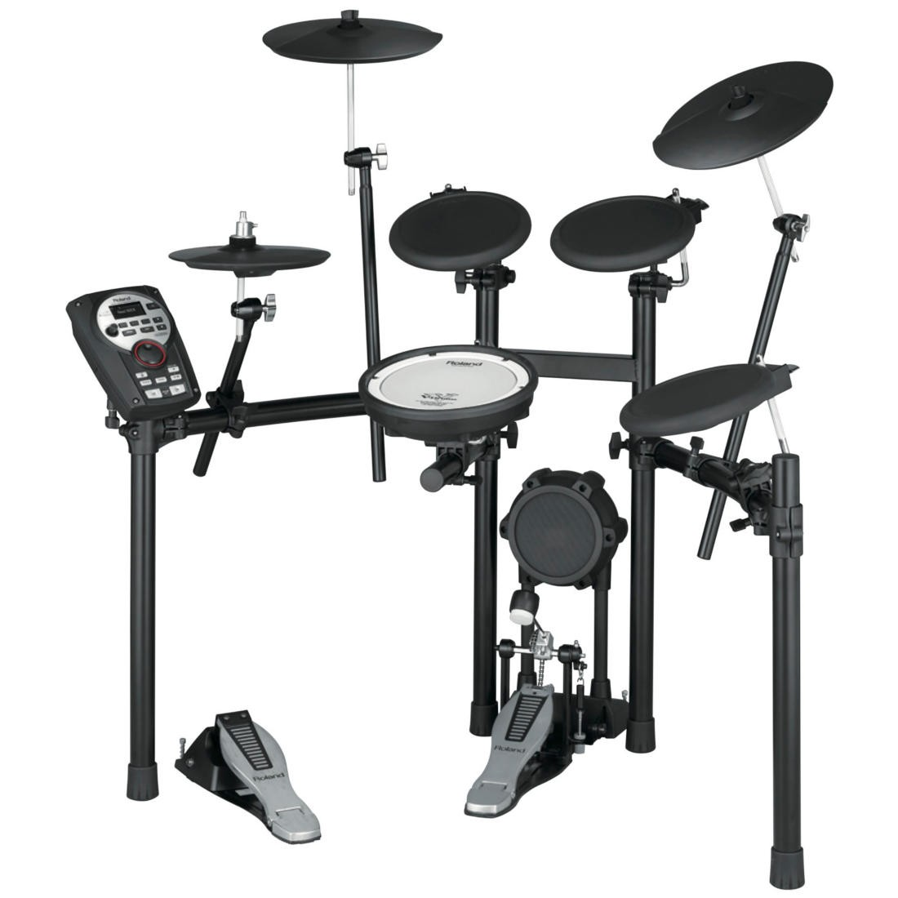

Roland TD-4KP Portable Electronic Drum Kit
Featuring a small footprint and an innovative folding design for fast breakdown and easy transport/storage, the TD-4KP V-Drums Portable is the ultimate e-kit for mobile drumming and small spaces. The powerful TD-4 sound module is equipped with a wide range of expressive, editable sounds and essential practice features, while the integrated pads provide a satisfying feel and natural playability. Perfect for small venues, rehearsals, lesson studios, bedrooms, apartments, and more, the TD-4KP combines V-Drums performance and features with impressive mobility and stow-away convenience.
Roland TD-4KP Specifications:
o Renowned V-Drums sound and quality in an ultra-portable mobile kit
o Innovative folding design for quick, compact breakdown and easy transport/storage
o Includes TD-4 Percussion Sound Module, loaded with expressive sounds, Coach and Quick Record/Play functions, and more
o Eight pads total: kick, snare, toms x3, hi-hat, crash and ride cymbals; FD-8 Hi-Hat Controller included
o Snare and tom pads feature cushioned-rubber surfaces for natural playing feel
o Options (sold separately): custom carrying case (CB-TDP); mesh-head snare pad (PDX-6/-8); pad mount (MDH-12); drum accessory package (DAP-3X); drum mat (TDM series).